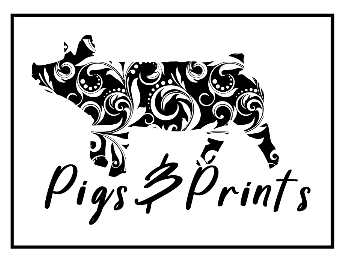

This is my basic webpage that provides information on a couple topics for my final project.
Pigs & Prints is named after the hobbies of my husband and myself. We call home to several acres of land that belong to the family farm. My husband's hobby is breeding, raising, and selling show pigs. My hobby is all things crafting. At any point of our day, you can find one of us in the barn and the other creatively working indoors. This became the figure-head for Pigs & Prints, creatively designed graphic tees where you may regularly find inspiration from the farm, the barn, and all things small-town.
And on the eighth day, God looked down on his planned paradise and said, “I need a caretaker.” So God made a farmer. God said, “I need somebody willing to get up before dawn, milk cows, work all day in the fields, milk cows again, eat supper, then go to town and stay past midnight at a meeting of the school board.” So God made a farmer.
God said, “I need somebody willing to sit up all night with a newborn colt and watch it die, and dry his eyes and say, ‘Maybe next year.’ I need somebody who can shape an ax handle from a persimmon sprout, shoe a horse with a hunk of car tire, who can make harness out of haywire, feed sacks, and shoe scraps. Who planting time and harvest season will finish his 40-hour week by Tuesday noon and then, painin' from tractor back, put in another 72 hours.” So God made a farmer.
God said, “I need somebody strong enough to clear trees and heave bales, yet gentle enough to yean lambs and wean pigs and tend the pink-combed pullets, who will stop his mower for an hour to splint the broken leg of a meadow lark.” So God made a farmer.
It had to be somebody who’d plow deep and straight and not cut corners. Somebody to seed, weed, feed, breed, and brake, and disk, and plow, and plant, and tie the fleece and strain the milk. Somebody who’d bale a family together with the soft, strong bonds of sharing. Who would laugh, and then sigh, and then reply with smiling eyes, when his son says that he wants to spend his life doing what dad does.
So God made a farmer.
-Paul Harvey
This is a list of potential categories for my Designs.